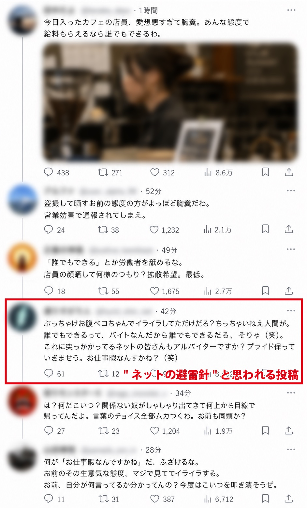

最近、SNSを騒がす1つのアカウントが話題になっている。その名は「ネットの避雷針」。まさに「避雷針」がごとく、炎上の降り注ぐ矛先を自在に操ってしまうそうだ。そんなことが、本当にできるのだろうか。
【写真】炎上寸前のアカウントに書き込まれた「ネットの避雷針」のコメントだが……
正体不明のインフルエンサー「ネットの避雷針」。氏が注目されたのは、先日発生した人気急上昇中の若手俳優Yが巻き込まれた炎上騒動だった。一般女性に対するセクシャルハラスメントともとられるDMを連続で行っていたことが有名インフルエンサーの今北サラバ氏によって暴露されたYだったが、その窮地を救ったのが「ネットの避雷針」だと言われているのだ。
「ネットの避雷針」自体はそのことに対する声明を発表していないが、Yのファンたちは「ネットの避雷針」のおかげだと口々に言っている。どうやら、Y自身がファンクラブ向けの生配信の中で「ネットの避雷針」に依頼し、炎上を消火してもらったということをこぼしていたらしい。
一方、そのような世論操作ができるということは「ネットの避雷針」は組織的な活動なのではないかという疑いの目も向けられている。Yからも推定数百万の報酬を受け取ったともささやかれているが、炎上を餌にそのような利益を得ていることから、「ネットの避雷針」自身への批判の声も耳にする。
真偽は不明だが、新時代の「必殺仕事人」の登場にネットは今日も湧いている──。